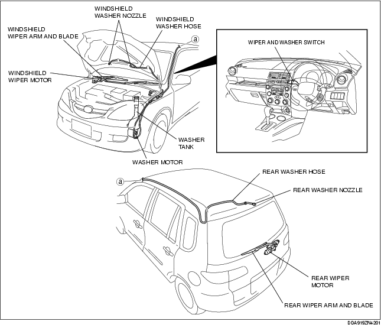

Mazda2
service manual
Search the manual
Home
Technical Guide
Body & accessories
Wiper/washer system
Wiper/washer system structural view
Wiper/washer system structural view

Previous
Wiper/washer system specification
Next
Windshield wiper system outline